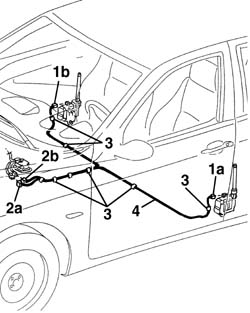

7065A80 pre-tensioner wiring - r r
- Path
- Procedures > 70 FITTINGS > 7065 SEAT BELTS AND ACCESSORIES > 7065A FRONT SEAT BELTS > 7065A80 pre-tensioner wiring - r r
- Kind
- repair procedure (removal / refitting; the operation number is the code)
- Applies to
- all engines; all production periods
- Interactive page
- https://sloeber94.github.io/elrnDB-a156/en/#/3238973
Applies to: all engines; all production periods
Applies to: engines: 1.6 TS , 2.5 V6, 1.9 JTD 8v , 2.4 JTD 10v; all production periods
 Removing
Removing
 Refitting
Refitting1056B82 injection/ignition system e.c.u. (one) - r + r
7040G24 switch for facia compartment light - r+r
7040G20 facia compartment light bulb holder - r+r
7040A14 flap of glove compartment trim element (one) - arrange
Remove the control unit bracket.
Applies to: engines: 1.6 TS , 1.8 TS, 2.5 V6, 1.9 JTD 8v , 2.4 JTD 10v; all production periods
- 7040L44 rear compartment scuff strip - r r (right and left)
7040H36 central trim lower element - r r (right and left).
7040L40 front compartment scuff strip - r r (right and left).
7045A10 l/h or r/h front seat (one) - r+r (right and left).
7050A20 one-piece rear seat cushion - r r
7040A65 passenger compartment box lock , one , r r (right and left).
5040D22 control (one) of air conditioner control support - arrange
2125C24 gear lever knob - r + r
7040A60 under facia trim - r+r
3380A44 handbrake/linkage protection - r+r
7040L28 tunnel switch panel - r r
5010B46 central air duct to rear seat - arrange
5010C44 air diffuser to rear seat - r+r
7040L10 cabin floor carpet - r r
1. Disconnect pretensioner electrical connections (1a, 1b).
 | Name | Connector |
|---|---|---|
1a | Driver's seat belt pre-tensioner |
| Name | Connector |
|---|---|---|
1b | Front passenger seat belt pre-tensioner |
2. Disconnect air bag wiring electrical connections (2a (2b).
| Name | Connector |
|---|---|---|
2a | Pretensioner connection |
| Name | Connector |
|---|---|---|
2b | Pretensioner connection |
3. Disconnect the wiring harness retaining collars.
4. Remove the wiring harness.

Applies to: all engines; all production periods
Refitting
RemovingCheck that the wiring is undamaged and that the individual conductors are firmly attached to the connections.
Check that the connections are fitted with anti-slip devices (secondary lock).
If necessary, check the continuity.
Fit the wiring harness, secure using retaining collars and connect the electrical connections.
7040L10 cabin floor carpet - r r
5010C44 air diffuser to rear seat - r+r (right and left).
5010B46 central air duct to rear seat - arrange
7040L28 tunnel switch panel - r r
3380A44 handbrake/linkage protection - r+r
7040A60 under facia trim - r+r
2125C24 gear lever knob - r + r
5040D22 control (one) of air conditioner control support - arrange
7040A65 passenger compartment box lock , one , r r (right and left).
7050A20 one-piece rear seat cushion - r r
7045A10 l/h or r/h front seat (one) - r+r (right and left).
7040L40 front compartment scuff strip - r r (right and left).
7040H36 central trim lower element - r r (right and left).
- 7040L44 rear compartment scuff strip - r r (right and left).
Applies to: engines: 1.6 TS , 2.5 V6, 1.9 JTD 8v , 2.4 JTD 10v; all production periods
Refit the bracket and secure using a threaded plug and nut.
7040A14 flap of glove compartment trim element (one) - arrange
7040G20 facia compartment light bulb holder - r+r
Applies to: engines: 1.6 TS , 1.8 TS, 2.5 V6, 1.9 JTD 8v , 2.4 JTD 10v; all production periods
Check component operation after refitting.
Check the operation of the system using the Examiner or another tester.
Topics linked from this page (26)
- 1056B82 injection/ignition system e.c.u. (one) - r + r
- 2125C24 gear lever knob - r + r
- 3380A44 handbrake/linkage protection - r+r
- 5010B46 central air duct to rear seat - arrange
- 5010C44 air diffuser to rear seat - r+r
- 5040D22 control (one) of air conditioner control support - arrange
- 5570T80 car radio unit - r+r
- 7040A14 flap of glove compartment trim element (one) - arrange
- 7040A31 flap assembly - r r
- 7040A60 under facia trim - r+r
- 7040A65 passenger compartment box lock , one , r r
- 7040G20 facia compartment light bulb holder - r+r
- 7040G24 switch for facia compartment light - r+r
- 7040H36 central trim lower element - r r
- 7040L10 cabin floor carpet - r r
- 7040L20 tunnel trim - r r
- 7040L28 tunnel switch panel - r r
- 7040L40 front compartment scuff strip - r r
- 7045A10 l/h or r/h front seat (one) - r+r
- 7050A20 one-piece rear seat cushion - r r
- 7065A FRONT SEAT BELTS
- 7065C42 ashtray (one) r+r
- D61A Pretensioner connection ( AIR BAGS )
- D61B Pretensioner connection ( AIR BAGS )
- Q20 Driver's seat belt pre-tensioner ( PRETENSIONERS )
- Q21 Front passenger seat belt pre-tensioner